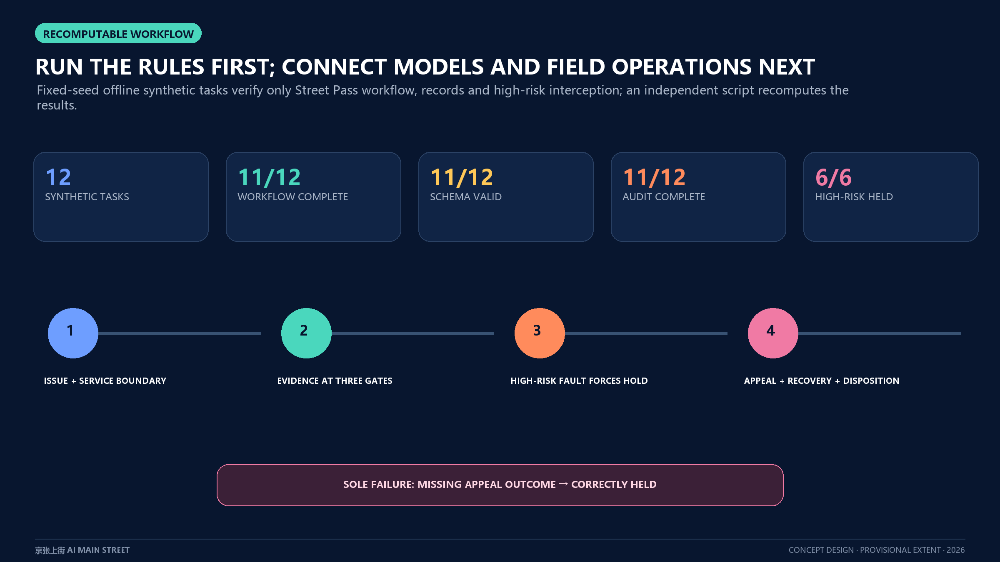

AI MAIN STREET / FINAL SUBMISSION
JING-ZHANG AI MAIN STREET | ONE ROUTE, THREE GATES, ONE PUBLIC LEDGER
Test AI services for safety, public understanding and useful first use in the real city before scaling.
THE FIRST HANDOVER-READY PROJECT

A SERVICE'S PATH TO THE STREET

OVERALL SPATIAL FRAMEWORK

PLANNING ALIGNMENT

THREE KEY AREAS

RECOMPUTABLE WORKFLOW

METRICS AND EVIDENCE INDEX

DELIVERY ROADMAP

EVIDENCE INDEX
Overview mapThree-level scopeKey areasLand useWalking and mobilityBlue-green public spaceBuildingsRenewal projectsAI scenariosCore metricsTask coverageSelf-check statusSourcesAssumptions